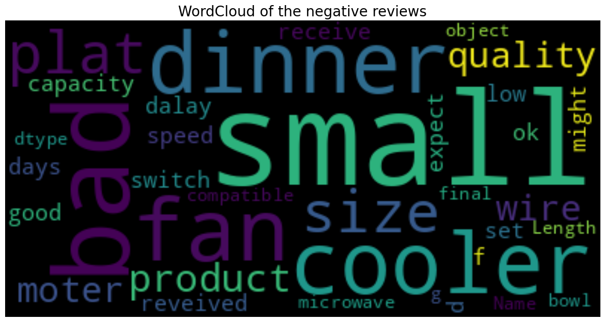

Sentiment Classification
using NLP models
In this project, I will use python to analyze the reviews of products of an online store to find out the characteristics of negative, positive and neutral reviews. Then I use Naive Bayes, XGBoost and LSTM to classify reviews.
Click here to access full of my project on my Github- Input: The dataset I used in this project is about reviews of customers about products of a business. This dataset includes main features of any product like product_name, price, rate, review, summary and sentiment (label).
- Goal:
- Find out the characteristics and the distribution of negative, positive and neutral comments.
- I will find out what popular keywords are in positive, negative and neutral reviews by drawing word clouds.
- Identify the best model for sentiment prediction: Naive Bayes, XGBoost or LSTM.
- Result:
- Exploration Data Analysis
- The number of 5-star ratings accounted for the most, 2-star ratings accounted for the least, and 1-star ratings ranked 3rd. That shows that most products satisfy customers.
- Because the number of 5-star ratings accounted for the most, the number of positive reviews also accounted for the most. Followed by negative reviews and neutral reviews.
- The length of comments focuses on the range of 0-20 words. It can be seen that long reviews are negative reviews and shorter reviews are neutral or positive.
- Word Clouds
- Common keywords in negative reviews include: small, bad, fan, size. These keywords indicate that customers are not satisfied with the cooling devices such as: cooler or fan
- Popular keywords in positive reviews include: nice, good, air, cooler, excellent, great, amaze. These reviews show that customers have a good experience with the products.
- Common keywords in neutral reviews include: overall, average or ok. Show a neutral attitude towards the product.
- Text classification models comparison
- The results compare the accuracy of 3 models: Naïve Bayes, XGBoost and LSTM in text classification.
- Naïve Bayes: 0.89
- XGBoost: 0.91
- LSTM: 0.92 It can be concluded that LSTM is better than Naïve Bayes and XGBoost in text classification.
- Exploration Data Analysis
- Project Duration
- Data mining and preprocessing
- Exploratory Data Analysis
- Analyzing keyword in reviews
- Text processing
- Drawing words clouds
- Building NLP models
- naive Bayes
- XGBoost
- LSTM
- Data mining and preprocessing
- Data mining
- Product_name: Name of the product.
- Product_price:Price of the product.
- Rate: Customer's rating on product(Between 1 to 5).
- Review: Customer's review on each product.
- Summary: This column includes descriptive information of customer's thoughts on each product.
- Sentiment: This column contains 3 labels such as Positive, Negative and Neutral(Which was given based on Summary). - Data preprocessing
- Drop null value of summary column - Convert the data type of rate and price column to numeric form
- Find and remove outliers and anomalies - Create more useful columns: convert sentiment to numeric form, create additional columns length_of_text: Create sentiment_num columns which use number 0, 1, 2 to represent the values: negative, neutral and positive respectively.df1['Rate']=df1['Rate'].astype(int)df1['Sentiment_num']=df1['Sentiment'] df1.head() df1['Sentiment_num'].replace({'positive': 2, 'neutral': 1, 'negative':0}, inplace=True) df1.head() Create the length_of_text columns to counts how many words in a review df1['length_of_text'] = [len(i.split(' ')) for i in df1['Summary']] df1.head()
- Data mining
- Product_name: Name of the product.
- Exploratory Data Analysis The number of 5-star ratings accounted for the most, 2-star ratings accounted for the least, and 1-star ratings ranked 3rd. That shows that most products satisfy customers. A few of them are not satisfied but have not reacted negatively yet (rate 2 instead of 1 star). The number of 1-star ratings is still high, businesses need to find out which products or industries receive the most 1-star reviews to make adjustments. Because the number of 5-star ratings accounted for the most, the number of positive reviews also accounted for the most. Followed by negative reviews and neutral reviews. This further confirms that there are products that disappoint customers. Businesses need to find these products and improve them. The length of comments focuses on the range of 0-20 words. In particular, from the distribution chart, it can be seen that long reviews are negative reviews and shorter reviews are neutral or positive. This may explain that when customers give 1 star or negative reviews, sellers often ask students to provide more experiences so they can improve.
- Analyzing keywords in reviews
- Text processing
- Step 1: Remove punctuations
- Step 2: Tokenize and remove stop words# Removing Punctuations and Numbers from the Text def remove_punctuations_numbers(inputs): return re.sub(r'[^a-zA-Z]', ' ', inputs) df1['Summary'] = df1['Summary'].apply(remove_punctuations_numbers)
Stop words are common words that are often filtered out during text analysis because they are considered to carry less meaningful information compared to other words in a sentence. These words include articles (e.g., "the", "an", "a"), prepositions (e.g., "in", "on", "at"), conjunctions (e.g., "and", "but", "or"), and other frequently used words that don't contribute much to the core meaning of the text.#tokenize import nltk nltk.download('punkt') from nltk.tokenize import word_tokenize df1['text_tokenized'] = df1['Summary'].apply(lambda x: word_tokenize(x)) df1['text_tokenized'] #create array of stopwords import nltk from nltk.corpus import stopwords from nltk.tokenize import word_tokenize nltk.download('punkt') nltk.download('stopwords') # Define the remove_stop_word function def remove_stop_word(tokens): stop_words = set(stopwords.words('english')) filtered_tokens = [token for token in tokens if token.lower() not in stop_words] return filtered_tokens
- Step 3: Lemmatize# Assuming data['text_tokenized'] contains the tokenized text df1['no_stop_word'] = df1['text_tokenized'].apply(remove_stop_word) # Print the results df1['no_stop_word'].head()
Lemmatization is a text preprocessing technique used in natural language processing (NLP) to reduce words to their base or root form, known as the "lemma." For example, consider the words: "running," "ran," and "runs." After lemmatization, all these words would be reduced to their common lemma, "run."#lemmatize import nltk from nltk.stem import WordNetLemmatizer nltk.download('wordnet') #Define a function to lemmatize lemmatizer = WordNetLemmatizer() def lemmatization(inputs): # Ref.1 return [lemmatizer.lemmatize(word=kk, pos='v') for kk in inputs] df1['text_lemmatized'] = df1['no_stop_word'].apply(lemmatization) df1['text_lemmatized'].head() - Drawing words clouds
Common keywords in negative reviews include: small, bad, fan, size. These keywords indicate that customers are not satisfied with the cooling devices such as: cooler or fan, they are quite smaller than expected or of poor quality.Popular keywords in positive reviews include: nice, good, air, cooler, excellent, great, amaze. These reviews show that customers have a good experience with the product. The keyword cooler appears in both positive and negative reviews because this is the main product of the business.

- Text processing
- Further Analysis
- Naive Bayes
Result:prediction_nb = nb.predict(X_test) - XGBoost
Result:# X is the feature matrix, y is the label vector X_train, X_test, y1_train, y1_test = train_test_split(X, y1, test_size=0.2, stratify=y, random_state=42) prediction_xgb = xgb.XGBClassifier(objective='multi:softmax', num_class=3, random_state=42) - LSTM
Result:# Building the LSTM model model = Sequential() model.add(Embedding(vocab_size, 32, input_length=max_len)) model.add(LSTM(64, dropout=0.2, recurrent_dropout=0.2)) model.add(Dense(num_classes, activation='softmax'))
- Naive Bayes
- Conclusion
- Exploration Data Analysis
- The number of 5-star ratings accounted for the most, 2-star ratings accounted for the least, and 1-star ratings ranked 3rd. That shows that most products satisfy customers. A few of them are not satisfied but have not reacted negatively yet (rate 2 instead of 1 star). The number of 1-star ratings is still high, businesses need to find out which products or industries receive the most 1-star reviews to make adjustments.
- Because the number of 5-star ratings accounted for the most, the number of positive reviews also accounted for the most. Followed by negative reviews and neutral reviews. This further confirms that there are products that disappoint customers. Businesses need to find these products and improve them.
- The length of comments focuses on the range of 0-20 words. In particular, from the distribution chart, it can be seen that long reviews are negative reviews and shorter reviews are neutral or positive. This may explain that when customers give 1 star or negative reviews, sellers often ask students to provide more experiences so they can improve.
- Word Clouds
- Common keywords in negative reviews include: small, bad, fan, size. These keywords indicate that customers are not satisfied with the cooling devices such as: cooler or fan
- Popular keywords in positive reviews include: nice, good, air, cooler, excellent, great, amaze. These reviews show that customers have a good experience with the products.
- Common keywords in neutral reviews include: overall, average or ok. Show a neutral attitude towards the product.
- Text classification models comparison
- The results compare the accuracy of 3 models: Naïve Bayes, XGBoost and LSTM in text classification.
- Naïve Bayes: 0.89
- XGBoost: 0.91
- LSTM: 0.92 It can be concluded that LSTM is better than Naïve Bayes and XGBoost in text classification.
- Exploration Data Analysis
Here the full code and dataset I used
Click here